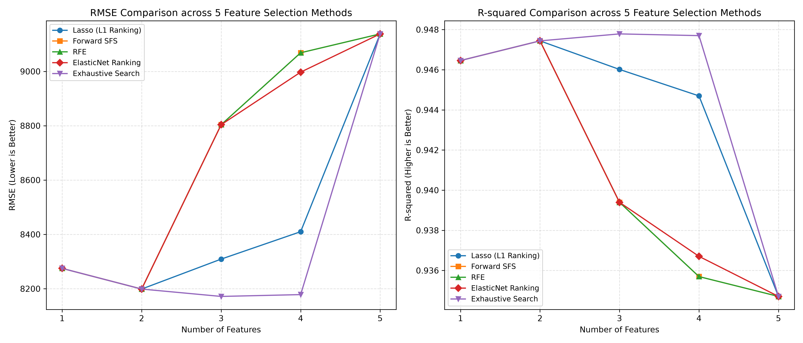

5大特徵選擇演算法對比基準圖 (Master Benchmark Plot)
在 80/20 資料分割下，跨 5 大特徵選擇演算法於 $k = 1 \sim 5$ 特徵維度的測試集 RMSE 與 $R^2$ 真實評估表現


端點必然重疊 ($k=1, 2, 5$)
$k=1$ 均選 R&D；$k=2$ 均選 R&D + Marketing (RMSE: 8,198)；$k=5$ 則皆退化為傳統普通最小平方法 (Full OLS, RMSE: 9,138)。
窮舉全域最優 ($k=3, 4$)
Exhaustive Search 突破前向貪婪法的巢狀枷鎖，捨棄 Marketing 改選 R&D + Admin + FL 創下全域最低 RMSE (8,171.65)。
Lasso 稀疏正則折衷 ($k=3, 4$)
Lasso (L1 Ranking) 藉由係數懲罰，優先保留州別虛擬變數並延後納入行政支出，表現顯著優於 SFS 與 RFE。
貪婪陷阱與過擬合 ($k=3 \to 5$)
Forward SFS 與 RFE 因無法回溯，在 $k=3$ 強行加入行政支出導致測試誤差暴增至 8,804，印證無關特徵造成的維度災難。
RMSE by Number of Features
均方根誤差 (越低越好，單位：美元)R-squared by Number of Features
判定係數 R² (越高越好，最大值為 1.0)5大特徵選擇演算法全特徵子集清單 ($k = 1 \sim 5$)
點擊任一演算法可查看其各特徵階層之特徵組合、測試集表現與相對變化
| 演算法名稱 | 特徵數 (k) | 挑選之特徵子集 (Selected Features) | RMSE (誤差) | R-squared (R²) | 模型評級 |
|---|
新創公司營運數據輸入
調整各項支出參數，即時預測該新創公司之獲利預測值
預測結果與特徵貢獻分析
特徵貢獻金額分解
模型簡潔性效益 (Parsimony Advantage)
最佳 2 特徵模型不僅具有更高的預測準確度 (R²=0.9474 vs 0.9347)，而且排除了對獲利幾乎無線性解釋力、且容易引入雜訊的「行政支出」與「設立州別」，大幅降低了商業決策的估算風險。
變數相關係數矩陣 (Correlation Matrix)
分析各特徵與獲利 (Profit) 之間，以及特徵彼此之間的皮爾森相關性
| 變數名稱 | R&D Spend | Marketing Spend | Administration | Profit (目標) |
|---|---|---|---|---|
| R&D Spend | 1.000 | 0.724 | 0.242 | 0.973 |
| Marketing Spend | 0.724 | 1.000 | -0.032 | 0.748 |
| Administration | 0.242 | -0.032 | 1.000 | 0.201 |
| Profit (目標) | 0.973 | 0.748 | 0.201 | 1.000 |
研發支出幾乎直接決定了獲利水準，是回歸模型的核心基石。
高研發的新創往往伴隨較高行銷預算，但兩者聯合建模仍能帶來顯著正向加成。
行政支出在回歸中容易造成多重共線性並稀釋其他重要係數的顯著性。
方差膨脹因子 (VIF) 與共線性診斷
評估特徵間之多重共線性程度 (VIF > 5.0 表示具有中高程度共線性)
⚠️ 為何單獨使用 VIF 篩選特徵會有盲點？
VIF 是非監督式的特徵間診斷，完全沒有考量目標變數 $y$ (Profit)。若單純以「去除最高 VIF 特徵」為規則進行逐次剔除，演算法會誤將與其他特徵有中度相關、但對 Profit 最具關鍵解釋力的 R&D Spend 給剔除，導致剩餘特徵預測力大幅潰縮。